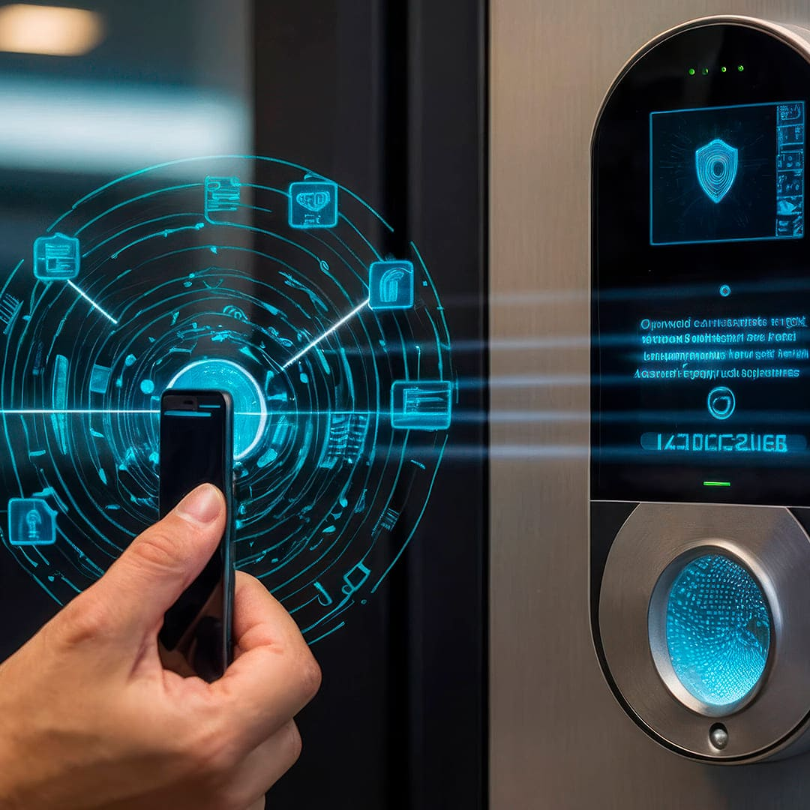

Mayo 2024 - Tiempo de lectura: 5 min.
7 tips de seguridad para tu negocio
Cuando decides abrir un negocio, tus preocupaciones van más allá de sólo vender. Piensas en qué lugar es mejor establecerte, qué producto o servicio ofrecer, pero también te enfocas en ver de qué manera puedes proteger tu patrimonio.
Aunque hay tiendas de servicio que venden sistemas de alarma, estos no ofrecen seguridad garantizada como lo haría una empresa de seguridad y monitoreo. Por ello, aunque sea un poco más caro, es mejor pagarles a los expertos.
Ellos saben cómo hacer su trabajo, además de estar en contacto con las autoridades para poder actuar de forma efectiva.
¿Qué puedo hacer para proteger mi negocio?
La protección para negocios es igual de importante que la del hogar o grandes corporativos. Además de contratar una póliza de seguro de propiedad comercial, se recomienda contratar un servicio de monitoreo para que el
local pueda ser vigilado las 24 horas del día.
Hay varias cosas que puedes hacer para proteger tu negocio; por ejemplo:
- Instalar un sistema de seguridad con monitoreo incluido.
- Actualizar de
forma constante los sistemas de seguridad.
- Brindar capacitación a tus empleados para que sepan cómo actuar ante una emergencia.
- Mantenimiento constante.
- Contratar un seguro de propiedad comercial.
- Dar mantenimiento de forma constante para que el lugar no se vea descuidado.
- Usa políticas de seguridad con los empleados para que la información o recursos no tengan mal uso.
Otro de los consejos de seguridad para proteger tu negocio,
es tener buena relación con la gente que está cerca del local en donde te encuentras. Ellos (aunque no lo creas) podrían ser de gran ayuda en caso de cualquier siniestro.

Imagen ilustrativa
¿Cómo hacer para que no te roben en tu negocio?
Para que haya mayor seguridad en tu negocio, opta por no tener tanto dinero en efectivo en la caja registradora. Al menos una vez al día deposita los ingresos en el banco o en una caja fuerte (previamente colocada en el piso
de alguna habitación en la que sólo tenga acceso el personal autorizado).
Si contratas un sistema de monitoreo y seguridad, procura que tenga botón de pánico, control de acceso, puertas de seguridad y monitoreo las 24 horas del día.
¿Qué debe tener un buen sistema de seguridad?
Un sistema de seguridad funcional consta de varias cámaras de video, también puede incluir control de acceso, sistema de intrusión, detector de incendios o sismos, niebla de seguridad y monitoreo 24/7.
En Central de Alarmas contamos con diferentes servicios que se ajustan a tus necesidades. No lo pienses más y contáctanos para obtener más información sobre ellos.